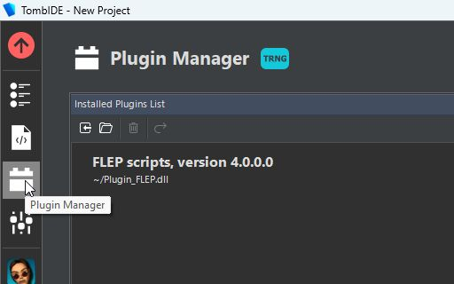
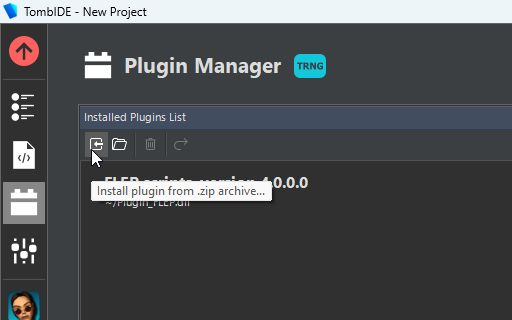
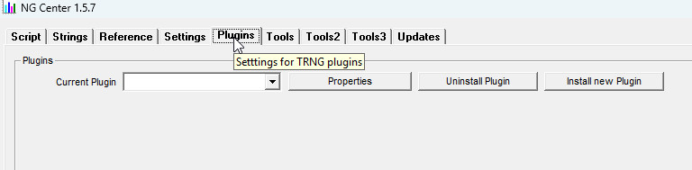
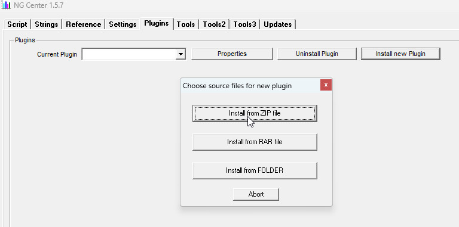
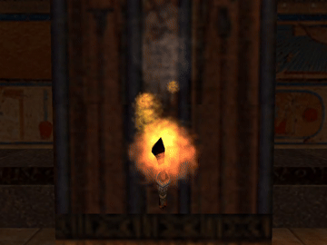
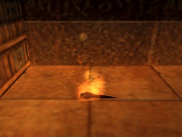
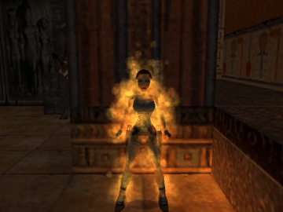

Perhaps you have already seen some of the possibilities offered by this plugin and thought to yourself – “I want to do stuff like that too, sign me up”! Maybe you already have hundreds of ideas of how to use scriptable particle effects and are eager to try them out. Or, perchance, you are skeptical that any of this is even legit and want to see through the BS. Either way, you’ve made the right choice, I promise to deliver!
I just want you to be aware that the road ahead is long, uphill and filled with twists and turns. I believe, however, that it is all worth it. From my side, I will try to explain everything about the plugin and its scripting syntax in the simplest terms possible, whilst providing plenty visuals to assist the learning process. Hopefully, this will lessen the steepness of the learning curve. However, you must also be willing to participate and put in the effort of learning to reap the benefits. Keep in mind that you do not need to read the entirety of this manual to script simpler particle effects. For that purpose, it is enough to finish reading Chapter 1 on Init Functions, and perhaps a bit of Chapter 2 on Update Functions, if you have it in you. The manual doesn’t finish there, as there are several other chapters, which go further ahead. They are meant to guide you in becoming really proficient with this plugin and the features it offers. However, you may decide to opt out at any time, if following along becomes to difficult. You can of course take a break and return to it at a later point, hopefully with a cleared out mind.
Before we venture into the deep depths of the plugin, we will begin by introducing some basic concepts and terminologies that will be reoccuring throughout the whole manual. Familiarizing yourself with them is vital to understanding the Particle System plugin as a whole. These are the foundations of the plugin – everything you will learn later builds upon the contents detailed below. Really, do not get ahead of yourself, else you risk having to frequently backtrack to this very page.
The base requirement for this plugin is using it with the TRLE/TRNG engine (Tomb Raider Next Generation by Paolone), with TRNG version 1.3.0.7. The plugin must be installed correctly in the TRLE project.
If using the TombIDE project manager from the Tomb Editor suite, you install the plugin via the Plugin Manager tab by clicking the Install plugin from .zip archive button and selecting the downloaded Plugin_ParticleSystem.zip archive in the file explorer window.


If using NG Center, you install it by going to the Plugins tab, clicking Install New Plugin, choosing the Install From ZIP file option and selecting Plugin_ParticleSystem.zip in the file explorer.


If the installation was successful, you are ready to use this plugin.
A particle system is a technique in game physics, motion graphics, and computer graphics that uses many minute sprites, 3D models, or other graphic objects to simulate certain kinds of “fuzzy” phenomena, which are otherwise very hard to reproduce with conventional rendering techniques – usually highly chaotic systems, natural phenomena, or processes caused by chemical reactions.
Quite a mouthful. The key point to take away is that it is a technique where various phenomena are represented with numerous, individually simulated and rendered entities (e.g. sprites or 3D models).
What kind of phenomena could be represented by using particle systems? The Wikipedia article further continues:
(…) examples include replicating the phenomena of fire, explosions, smoke, moving water (such as a waterfall), sparks, falling leaves, rock falls, clouds, fog, snow, dust, meteor tails, stars and galaxies, or abstract visual effects like glowing trails, magic spells, etc. – these use particles that fade out quickly and are then re-emitted from the effect’s source.
Okay, we now have a clearer picture of what kind of visual effects could be achieved with the use of a particle system.
How is this relevant to us?
The goal of the Particle System plugin is to add a method of implementing particle systems as described, where users can create their own simulated effects for TRLE levels, including but not limited to the phenomena listed in the latter quote. I must emphasize that particle effects aren’t just for looks and atmosphere, but can also be inseparable elements of gameplay. The plugin’s scripting interface provides the possibility to add ranged attacks to melee enemies, give Lara magic powers, set up deadly traps or to create new types of weapons to be used against baddies in combat.
As a coder, you will be mastering this particle system to make special particle-based effects, either for yourself or for others. We will now be describing fundamental ideas behind the particle system, which are required to get some footing on the subjects ahead. This information is mandatory knowledge for coders who will be working on new effects, so be studious and diligent, my disciple.
The plugin’s particle system operates from within the Plugin_ParticleSystem.dll (surprise, surprise). You, as the user, can interact with it through the Particle Scripting API in the Lua scripting language. This is the language through which you will communicate with the plugin. Getting the hang of Lua and the scripting API designed around it is indispensable for creating your own particle effects. However, prior to all of that, one must understand the theoretical concepts behind the particle system in the first place.
The fundamentals – Particles and Particle Groups
There are two very important concepts to understand in context of the Particle System plugin. These two concepts are:
Particles
Particle Groups
Particles are game entities, which when grouped together, form an effect. Particles in some form already existed in the classic TR engines, examples including smoke, steam, flames, blood, bubbles, snow and rain, to name just a few. You can picture a particle as some individual entity, with a position, velocity, color and sprite texture (or mesh), which is a component of some greater effect, like a fire or snow storm. We will call a single such particle a particle instance. You should remember this definition – a particle instance is a singular particle entity of a broader collection of particles.
Particle Groups are a way to categorize particles by “type”. To relate this to classic TR again, you can see that when comparing fire particles with snow particles, not only do they appear different to each other, but also exhibit vastly different behavior. By using our terminology, we can say that fire particles belong to a different particle group than snow particles. Another way to look at it is to compare this to enemies and their moveable slots. Notice how some enemy, e.g. from the BADDY_2 slot, has some individual characteristics, such as position, remaining health or the animation he is currently performing. These are true for that specific instance of Baddy, but not necessarily true for other instances of BADDY_2 in the level (after all, a second baddy can be somewhere else, may not be triggered yet, may have a different amount of health left, or can be performing a different animation). However, there are also traits that all BADDY_2 will share with each other, such as their appearance or the general behavior/AI. Let’s relate this back to particles. A particle instance can have a unique position, velocity or color, but as a member of a particle group, it shares the same behavior with other particle instances of the group.
To recap, we have a particle group, which is a specific “type” of particle in the particle system. A particle instance belonging to this group shares many of its properties with other particle instances in the group, while simultaneously having other, individual properties, unique to that specific particle instance. All together, the particle instances of the group contribute to simulating some phenomenon, like fire, fog, falling leaves, a magic spell, so on and so forth. A particle must belong to a group, otherwise it cannot exist.
As we have defined Particles and Particle Groups on a surface level, it’s time to move to the technical aspects of how both work. Particles and their respective groups are the core concept of the particle scripting workflow, so make sure you understand them and the relationship between them before moving on.
Particles have many properties that define them, but I will describe the some essential ones for now, which characterize practically all particles:
Group – The particle group to which the particle instance belongs.
Position – 3D vector (can also be thought of as a point in 3D space), describing the (X, Y, Z) coordinates of the particle instance in the game world.
Velocity – 3D vector describing the (X, Y, Z) components of velocity (i.e. how many units of space the particle instance travels on each axis per each frame in-game). Velocity, applied to position over time, results in motion.
Acceleration – 3D vector describing the (X, Y, Z) components of change to velocity (i.e. by how many units the velocity will change on each axis component, per frame). Positive Y acceleration can be imagined as the force of gravity pulling the particle towards the ground. The 3D vector generalizes this idea of force to all directions in 3D space.
LifeSpan – How much total life the particle instance starts out with. In other words, the longevity of a particle instance. The particle’s LifeCounter also starts out with this value at first.
LifeCounter – The current amount of life the particle instance has. The value is always somewhere inbetween LifeSpan and 0, i.e. 0 ≤ LifeCounter ≤ LifeSpan. On each in-game frame, the LifeCounter is decreased by 1. Once it reaches 0, the particle instance dies and is no longer drawn or updated.
RoomIndex – It is necessary if the particle will be detecting collisions (e.g. with room geometry or with objects), otherwise it does not need to be specified.
Depending on the category of particle, it may have additional properties not described above, which will be covered later.
As you can tell, many of these properties sound vaguely mathematical. I have to set the scene and make it clear than particles are indeed very mathematical objects. It’s not really possible to design particle effects without knowing at least a bit of math. Occasionally, a calculator (either physical or in the PC) may prove to be handy. Fortunately, all of the mathematics needed to work with particles (almost) never go beyond what you learn in high school. Even then, most of it fits within elementary math education. For very simple effects like e.g. dust moving across a room, it’s no different to working with FLEP smoke emitter OCBs – you simply assign some number values to different fields, albeit with a new syntax. In this case, you don’t need to know much math, beyond just understanding how numbers work.
Since the scripting uses Lua as its language of choice, the mathematics are done with Lua’s coding syntax (and as such, math = code). A general rule of thumb is: the more elaborate the effect, the more math/code is involved, at least most of the time. If you were to make a homing missile that will track down Lara and explode on impact, for example, then it should seem logical that it will require more coding effort than some ambiently drifting dust particles. The good news is that the plugin’s Particle Scripting API offers several specialized, ready-to-use functions which can perform the more mundane and commonly needed calculations for you. This way, you don’t have to go through the effort of coding from scratch a function that will make the particle follow some item, for instance. It’s already available and ready to be used for your effect idea.
We’ve established the basic properties you can expect to find in particles. Now, let’s talk about particle groups.
A particle group (also simply called a group in context) stores information that characterizes all of the particle instances belonging to said group. As in the analogy to object slots, it describes common behavior of its particles. Thinking of a fire as a group of particles, the particle instances may have different positions, velocities, rotations, variations in color and size, but all of them use the same sprite set and will exhibit the same pattern of motion. We can observe a general, characteristic behaviour, by which we can identify this particle group, even if it manifests itself in different ways (from a flame emitter, a burning torch or when Lara herself is set on fire).



How do you describe this particle behavior to the plugin, though? As is often the case in programming, the behavior of objects is controlled by functions, which manipulate the data of said objects to make them behave in a certain way, to react or make decisions while the program is running. A multitude of various functions, which were written by Core Design programmers involved in classic Tomb Raider games across the years, are what determine the behaviors or Lara, enemies and interactible objects in the game engine we use to this day. The plugin brings this idea of behavior-controlling functions to custom particles. Effectively, we can control the behavior of particles belonging to a group by providing such functions to the group. These functions we must write ourselves, in the script file of a particle effect, with the use of the Lua language and the plugin API. If reading that made you feel intimidated, don’t you worry, I’ll teach everything you need to know in this manual.
There are two types of functions a group can have:
the initialization (init) function
the update function
The initialization function (or init function for short) has the main goal of providing instructions for initializing (setting properties for) a particle instance of the group, when it is spawned into the game world. It can set the particle’s initial position, velocity, size, lifetime, color and any other properties it may have. In other words, the init function provides a blueprint for creating particles of the group. Usually, this function is executed once on each game tick (frame), which translates to one particle appearing on each frame (but this can be altered).
The update function is a highlight feature of this plugin, making it extremely versatile and flexible for users. The update function is also performed on each game tick, but not just a single time – it’s performed for every currently existing particle instance belonging to the group. This function allows to access the particle’s properties and manipulate them on the fly, per each frame, during the course of the particle’s lifetime.
The ramifications of update functions are impossible to condense into just one paragraph, but in a nutshell, this means that you have full programming control of what all the particles belonging to the group are capable of doing at any point in time. Whatever you command the particles to do, they will do. This is a significant change of paradigm compared to FLEP smoke emitters, where you had little influence over how the particle was supposed to behave after being spawned (aside from being able to set some flags, for example to do contact damage or to set Lara on fire).
To give you a very brief idea of what’s possible with update functions, you can create particles that animate through a looping sequence of sprites or meshes, particles that follow Lara (or any other objects) around the level, particles with basic physics, which collide with walls, floors and objects, particles that travel along mathematically defined curves (such as helices, waves or even more complex shapes), particles with dynamically changing properties like colors or sizes, e.g. in response to the distance from Lara or the hitpoints of enemies near her, particles that harm, heal, poison, set on fire or explode on contact, particles that can spawn other particles, which in turn spawn even more particles, or particles that trigger a timed door sequence when coming into contact with a MUMMY, but only if Lara also has Puzzle Item 4 in her inventory and she’s currently monkey-swinging – totally absurd (or perhaps not, you decide)! This is a modest fraction of all that can be done with particle update functions.
For now, it is enough to know about init functions and update functions in the context of particle groups. There are also other useful properties and settings of particle groups, which will be covered in later chapters.
I have described particles very generally up to this point, but as I have hinted at already, there is more than one category of particle within the particle system. This is because particles are more than just a position, velocity and lifetime, there must also be a graphical object drawn at that position. This graphical object also needs to be described in some way to the plugin, so it will know what to draw on screen, to represent the particle. There are two different categorizations we can apply to particles. The first categorization asks: what is the particle’s graphical representation – is it a sprite or a mesh?
Sprite particles vs. Mesh particles
Sprite particles should seem quite familiar, almost all particle effects seen in the classic TR engines fall into this category. Smoke, fire, sparks, steam, blood, snow, underwater dust, bubbles – all of these are represented by a sprite texture with some possible coloration to it. The textures used for these effects mostly reside in the DEFAULT_SPRITES slot. There is also a special subtype of sprite particles in the Tomb4 engine, which is line-like, with only color and no sprite texture (as seen with rain, drips coming off Lara after swimming, ricochets on walls when shooting guns, etc). Even though they do not use any sprite texture, they are classified as sprite particles nonetheless. Both (textured) sprite particles and (textureless) line particles are supported by the particle system plugin and can be used as the particle type for your effect.
Mesh particles are particles represented by textured meshes from objects. There are not that many examples in classic TR, since meshes are mostly reserved for moveable items and statics. But if you look closely, you will see some examples of mesh particles as well: gunshells from Lara’s guns, the little beetles coming from the beetle emitter and locusts from the locust emitter, various projectiles shot by enemies like Demigod or Setha – are all forms of mesh-based particles. Sadly, in classic TRLE, the builders never had any means of controlling these mesh-based effects beyond changing the mesh itself and could only rely on predetermined behaviors coded into the engine. They could not be further manipulated beyond that, not even TRNG nor FLEP patches offering any ways of doing so.
In comes another big feature introduced by the plugin’s particle system – for the first time ever, you are given access to fully customizable mesh-based particles! They can be manipulated with init and update functions and used for all kinds of different effects, just like sprite particles. There are certain distinctions between them and sprite particles though, which will be explained in their respective chapters later in the tutorials.
Another categorization of particles is dividing them into world-space particles and screen-space particles.
World-space particles vs. Screen-space particles
What do these terms even mean: world-space and screen-space?
Simply put, world space is the three-dimensional space you see when playing the game, viewed through the game screen. It is characterized by the X, Y and Z axis, each axis representing one of the 3 dimensions. Practically all particles encountered in the original engine fall into this category, as they all are described by a 3D position coordinate.
What about screen space? Well, we mentioned that we are viewing this 3D world through a screen. This screen is flat and two-dimensional, and as such is described by just X and Y coordinates, which you may think of as pixels for simplicity. In order to represent the 3D space on a 2D screen, the engine performs some tricky calculations to project this virtual 3D world onto the 2D screen, through which you will be viewing it. In the process, the 3D coordinates are “flattened” to 2D. The new X and Y coordinates obtained from this “flattening” now mean something completely different: they determine in which location of the screen the object appears (this is a huge oversimplifcation of the whole process, but for our understanding, it’s enough).
So, what if we imagined particles which do not reside in the 3D game world, but instead existed on the 2D world of the game screen? Well, this is exactly what screen-space particles are! As yet another novel feature offered by this plugin, you are able to spawn sprite particles onto the game screen itself, as a foreground to whatever is going on in the 3D world. Through their particle group, you can assign init functions and update functions to fully control their behavior, same as with world-space particles. The only difference is that this no longer takes place in the 3D world, but instead on the game screen’s 2D world, which requires some unique considerations. You can perhaps find this feature quite useful to simulate overlay effects, like raindrops or snowflakes falling onto the camera lens, or Lara’s vision becoming obscured as she sustains injuries, or whatever other idea you may have in mind.
Screen-space particles require somewhat different handling and considerations by the particle coder, when compared to the ordinary world-space particles. But you can be assured, these aspects will be explained in later chapters of the tutorial series, once we have enough experience with regular 3D particles. Note that while world-space (3D) particles can either be sprite particles or mesh particles, screen-space (2D) particles can only be sprite particles (due to some technical limitations).
There are two distinct, albeit connected scripting interfaces that come with using this plugin, reflecting the two user archetypes. These two interfaces are the:
module script interface – for coders
level script interface – for builders
Module script interface
The module interface is intended for coders of particle effects (that’s you!) who will use Lua scripting to build custom effects from scratch. After they come up with the code, the .lua file in which the effect is defined will become an independent, reusable module. These modules can be placed in the folder called modulescripts. This folder should be located inside the working directory of the TRLE project/levelset, alongside folders such as audio or data. In case of projects managed by TombIDE, this will be inside the Engine subfolder. Note that if the modulescripts folder does not exist, it must be newly created (it must be named modulescripts or ModuleScripts, mind the ‘s’ at the end). Any number of modules with user-made effects can be present in the modulescripts subfolder, the plugin places no restrictions.
A module coder can optionally implement customizable parameters for the module. Parameters serve as an easy way for builders to change chosen aspects of a module after importing it. This is similar to using Customize or Parameters scripts in TRNG for some features. Nearly any aspect of a module can be influenced by a parameter, it is the coder who comes up with these parameters and decides how they are supposed to work. The only recommendation (if you intend to share the module) is that the parameters are well-documented, so builders know how to use them.
Level script interface
The level script interface is designed for builders who want to use effects from modules created by the coders (note that you may be both an effect coder and a builder at the same time). Each level file (.tr4) can be paired with any number of level script Lua files, contained in the levelscripts subfolder (again, this folder must be created if it does not exist yet, in the same directory as the modulescripts folder). These level script files can be linked with the level, by using the CUST_LEVEL_SCRIPTS command, informing the plugin which level scripts to load when launching the given level. However, level scripts are not mandatory – if there is no pairing between a level file and a Lua script file, the level will still run as normal, but no custom effects shall be used for the given level.
Being a coder, even if you will not use your effects for level building purposes, you still must use the level script interface to test the effects in game. It is practically impossible to script a particle effect blindly, without checking how it behaves in game first (not to mention whether it looks aestethically appealing or not). Meanwhile, if you intend to share your effect with other members of the community, it should most definitely work well, without errors, bugs or crashes. Hence, using the level script interface for module importing is still necessary to facilitate in-game testing. Rest assured, the level script interface will also be covered as part of the Coder Path, which means you do not need to read the Builder Path as a prerequisite.
Across the various pages of the tutorials, I will be providing snippets of Lua code, which may or may not be functional. I know many of you will probably be tempted to copy & paste the code the moment you see it. However, I would advise you against doing so. First of all, the code may not even work, but simply be a demonstration of what NOT to do (always read to the end of a paragraph to avoid such “surprises”)! Second of all, you will not learn as much if you resort to copy-pasting everything. This is tried and tested when it comes to any programming in general: you will learn considerably more, not only about the syntax, but also to think in the language you’re working with, when you write the code yourself, line by line.
Contrast this with copy-pasting everything as it goes and not even thinking about what it does. Do you think you will learn anything from that? Most likely, not at all. The tutorials are structured in a way for you to grasp the process of coming up with an idea for an effect, then describing that idea to the plugin in terms of code, start to finish. Hence, working through the examples yourself is vital to understanding how this scripting system works.
In spite of what I just said, for longer code snippets, I’ll provide a special button that will be located in the top right corner of the code block:
This button will copy the code displayed in the snippet to the clipboard with a single click (which you are then able to paste). Treat this as more of a convenience when you need to quickly compare the reference implementation to your own, rather than for avoiding putting in effort. I really can’t stress enough how important it is to type the code yourself if you want to become a proficient user of this plugin and create jaw-dropping particle effects!
With the theoretical background out of the way, we are slowly headed towards scripting our first particle effect! Before we get there, though, I’d like to explain the basics of Lua as a programming language for those unfamiliar with it in the upcoming Lua Crash Course. Even to the readers that already know a thing or two about Lua, I would highly recommend glancing through it, as I bring up some specific quirks of the scripting used in this plugin (such as the lack of global variables).